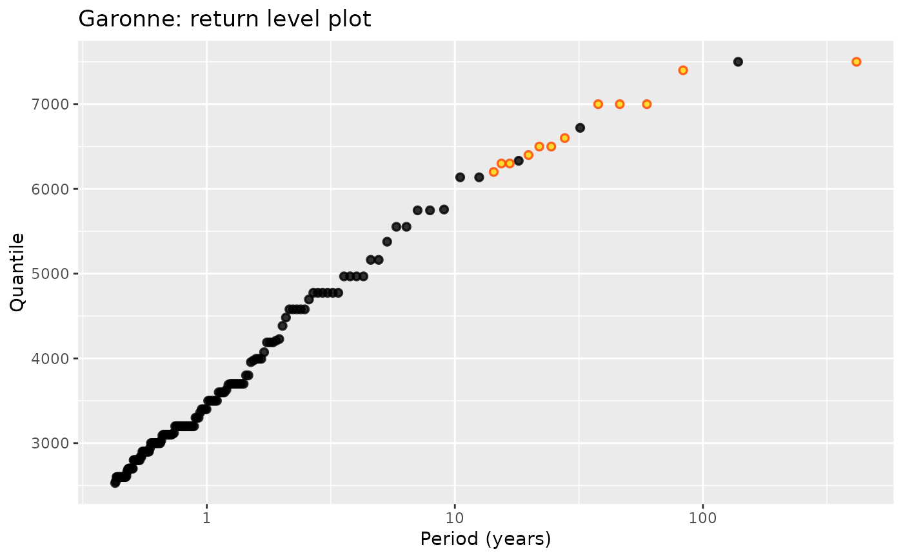

Structured data that can be used to define a Poisson-GP model with ML estimation.
Usage
potData(data = NULL, effDuration = NULL,
MAX.data = NULL, MAX.effDuration = NULL,
OTS.data = NULL, OTS.threshold = NULL, OTS.effDuration = NULL)Arguments
- data
A numeric vector containing the observations for the main sample. If
NULL, the main sample is assumed to be absent.- effDuration
Duration of the main sample.
- MAX.data
A numeric vector or list of numeric vectors containing the observations for the
MAXblocks.- MAX.effDuration
A numeric vector containing the durations for the MAX blocks.
- OTS.data
A numeric vector or list of numeric vectors containing the observations for the
OTSblocks.- OTS.threshold
A numeric vector containing the thresholds for the OTS blocks.
- OTS.effDuration
A numeric vector containing the durations for the OTS blocks.
Value
An object with class "potDATA", essentially a list
with the elements given on input checked and suitably named.
Details
As opposed to what is done in Renext, no 'main'
threshold is used here. The data is understood as
before being censored using any 'main' threshold. So
the MAX or OTS blocks can later be used in
poisGP with any 'main' threshold, even if they
contain observations and thresholds that are smaller than the
main threshold.
See also
autoplot.potData and
autolayer.potData for graphics,
RP.potData for empirical return periods and
plotting positions.
Examples
G <- potData(data = Garonne$OTdata$Flow,
effDuration = 65,
MAX.data = Garonne$MAXdata$Flow,
MAX.effDuration = 143)
G
#> $OT
#> $OT$flag
#> [1] TRUE
#>
#> $OT$effDuration
#> [1] 65
#>
#> $OT$n
#> [1] 151
#>
#> $OT$data
#> [1] 2600 2800 2700 4579 3400 4774 3000 4968 3100 3995 3100 3100 4774 2600 3400
#> [16] 3200 2800 6137 3200 4189 3200 2800 3500 3200 4579 3700 2800 4384 3700 3995
#> [31] 4774 3600 5747 2700 3100 3100 2900 3200 6332 3100 4579 3000 4579 2700 4968
#> [46] 3500 2600 7500 3800 2600 3200 3500 3300 3000 3700 3000 3000 2600 3000 3600
#> [61] 2900 3700 3200 2600 3500 6137 2900 2900 4774 4774 4189 4189 3000 3500 2600
#> [76] 3000 5757 3200 2800 2800 3000 5553 2600 3300 5553 3100 5163 2600 3200 3100
#> [91] 3600 3500 3400 4579 3700 3200 2600 2600 2900 3600 6721 2900 3800 2700 3000
#> [106] 2800 5747 3200 3200 2900 3200 3400 4968 2700 3700 4774 2700 2800 3300 2900
#> [121] 4968 5163 3700 2600 3200 3995 2600 2530 2690 4073 2840 2550 3120 2660 2610
#> [136] 4696 3690 2840 3090 5377 3956 2940 4228 3360 3110 3975 3200 3030 4209 4482
#> [151] 3630
#>
#>
#> $MAX
#> $MAX$flag
#> [1] TRUE
#>
#> $MAX$effDuration
#> [1] 143
#>
#> $MAX$r
#> [1] 12
#>
#> $MAX$data
#> $MAX$data$`MAX block#1`
#> [1] 7500 7400 7000 7000 7000 6600 6500 6500 6400 6300 6300 6200
#>
#>
#>
#> $OTS
#> $OTS$flag
#> [1] FALSE
#>
#> $OTS$effDuration
#> [1] NA
#>
#> $OTS$r
#> [1] NA
#>
#> $OTS$threshold
#> NULL
#>
#> $OTS$data
#> NULL
#>
#>
#> attr(,"class")
#> [1] "potData"
autoplot(G) + ggtitle("Garonne: return level plot")
